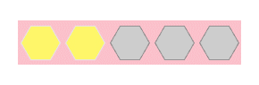

网页展示 ———— http://primerscern.xyz/rating-demo
项目地址 ———— https://github.com/Primers-cern/rating-demo
描述：
实现点亮星星的实时动画和交互，包括默认点亮星星，鼠标滑过点亮星星，鼠标点击后记住星星个数，同时冻结交互。纯JS实现，使用了两种设计模式，代码中运用了继承、闭包、单例等方法。
- Light
该方法使用了模板方法模式设计。
实现原理和思路：
首先，文档结构为无序列表，每个子选项为一个星星，并通过改变背景图片来点亮星星。
其次，该方法实现了整颗星星和半颗星星的逻辑模式，抽象出父类，通过继承父类方法实现交互。 - Light-ChangeWidth
该方法使用了策略模式设计模式。
实现原理和思路：
首先，文档结构为两个重叠的展示框，分别为灭星层和亮星层，通过控制元素宽度点亮星星。
其次，通过策略模式设计实现分割单个星星，无论是一个，半个，三分一，四分一都行！
